在这一章中，我们将讨论线性代数的主要概念，在这里学到的概念将作为我们学习后面章节中所有概念的基础，所以你一定要集中注意力。
对你来说，知道这些章节不能代替数学教育是非常重要的；它们的存在仅仅是为了帮助你更好地掌握深度学习的概念以及各种架构是如何工作的，并发展一种直觉，以便你可以成为该领域更好的从业者。
就其核心而言，代数只不过是对数学符号和操作这些符号的规则的研究。代数领域充当了所有数学的统一者，并为我们提供了一种思维方式。我们不用数字，而是用字母来表示变量。
然而，线性代数只涉及线性变换和向量空间。它允许我们通过向量、矩阵和张量来表示信息，对线性代数的良好理解将使你在对深度学习的理解上走得很远。都说一个数学问题，只有化为线性代数中的一个计算，才能解决。这说明了线性代数的能力和用途。
本章将涵盖以下主题:
- 比较标量和向量
- 线性方程
- 矩阵运算
- 向量空间和子空间
- 线性地图
- 矩阵分解
标量是常规数字，如7、82和93，454。它们只有一个量值，用来表示时间、速度、距离、长度、质量、功、功率、面积、体积等等。
另一方面，向量在许多维度上都有大小和方向。我们用向量来表示速度、加速度、位移、力和动量。我们用粗体写向量——比如 a 而不是 a— ，它们通常是多个数字的数组，数组中的每个数字都是向量的一个元素。
我们对此表示如下:
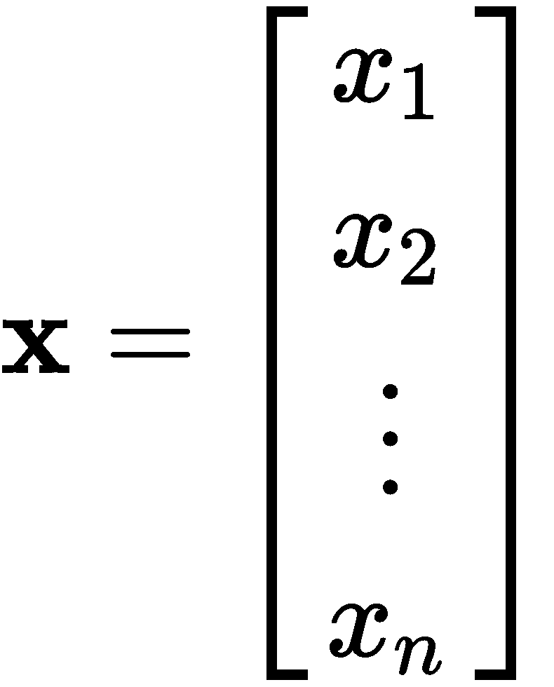
这里， 表示向量在 n 维实空间中，这是取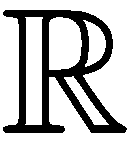 n 次笛卡尔积的结果； 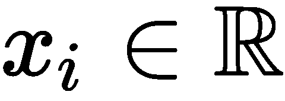 显示每个元素是一个实数； i 是每个元素的位置；最后，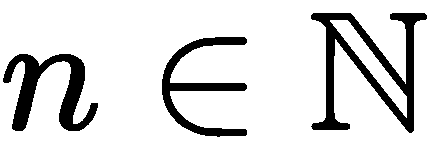是一个自然数，告诉我们向量中有多少个元素。
表示向量在 n 维实空间中，这是取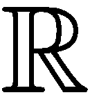 n 次笛卡尔积的结果； 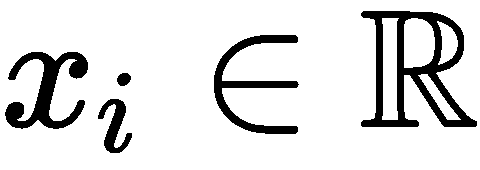 显示每个元素是一个实数； i 是每个元素的位置；最后，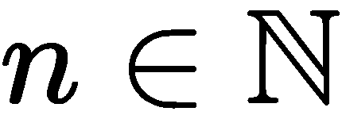是一个自然数，告诉我们向量中有多少个元素。
和普通数字一样，你可以加减向量。但是，也有一些限制。
让我们将之前看到的向量( x )与另一个向量( y )相加，这两个向量都在 中，因此如下适用:
中，因此如下适用:
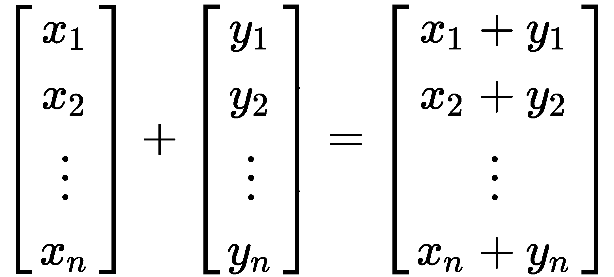
然而，我们不能将维数或标量不同的向量相加。
注意，当 中的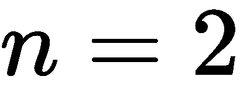时，我们减少到二维(例如，一张纸的表面)，当 n = 3 时，我们减少到三维(真实世界)。
中的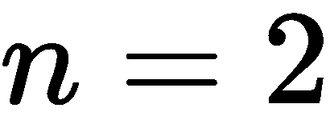时，我们减少到二维(例如，一张纸的表面)，当 n = 3 时，我们减少到三维(真实世界)。
然而，我们可以用向量乘标量。设λ是一个任意的标量，我们将把它乘以矢量 ，因此下面的公式适用:
，因此下面的公式适用:
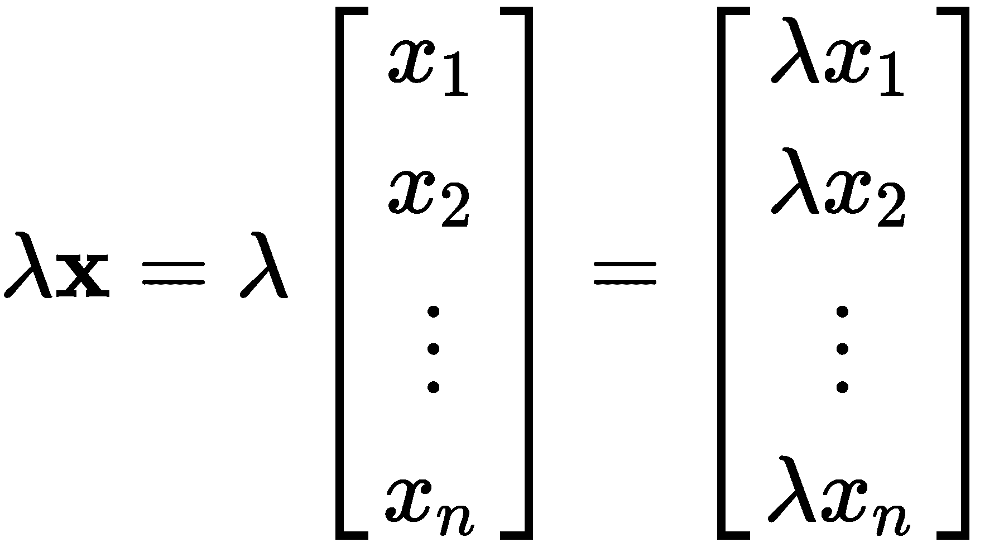
正如我们所见，λ乘以向量中的每个 x i 。这个操作的结果是向量被标量的值缩放。
比如让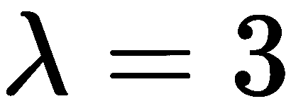，和 。然后，我们有以下内容:
。然后，我们有以下内容:
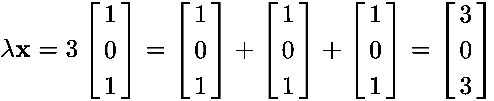
虽然这对于乘以一个整数很有效，但对于处理分数没有帮助，但是您应该能够猜出它是如何工作的。让我们看一个例子。
设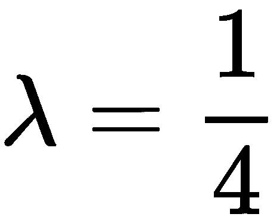，和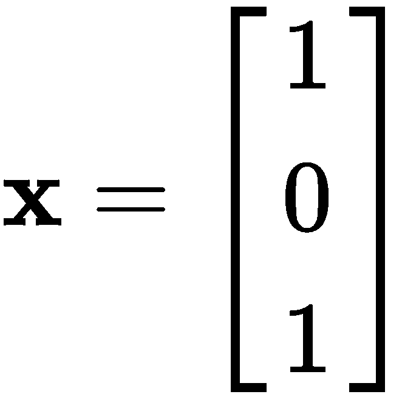。然后，我们有以下内容:
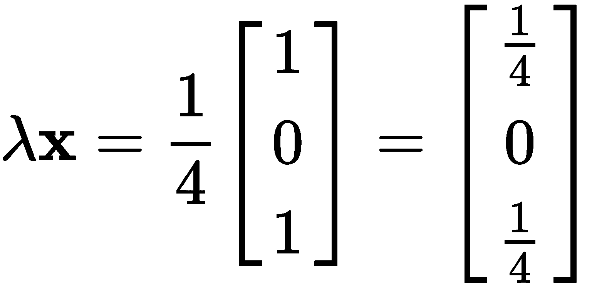
有一个非常特殊的向量，我们可以通过任何向量乘以标量得到， 0 。我们将此表示为 0 ，并将其称为零向量(仅包含零的向量)。
线性代数的核心是解一组线性方程，称为方程组。许多问题可以用线性方程组来描述。
我们有两个方程和两个未知数，如下所示:
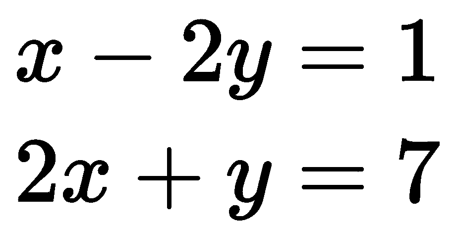
两个方程都产生直线。这两个方程的解是两条线相交的点。在这种情况下，答案是点(3，1)。
但是为了我们的目的，在线性代数中，我们将前面的方程写成如下所示的向量方程:
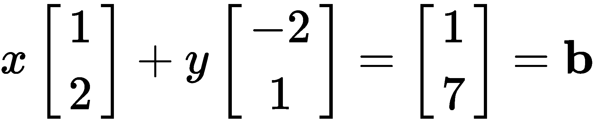
这里， b 是结果向量。
将点(3，1)放入向量方程，我们得到如下结果:
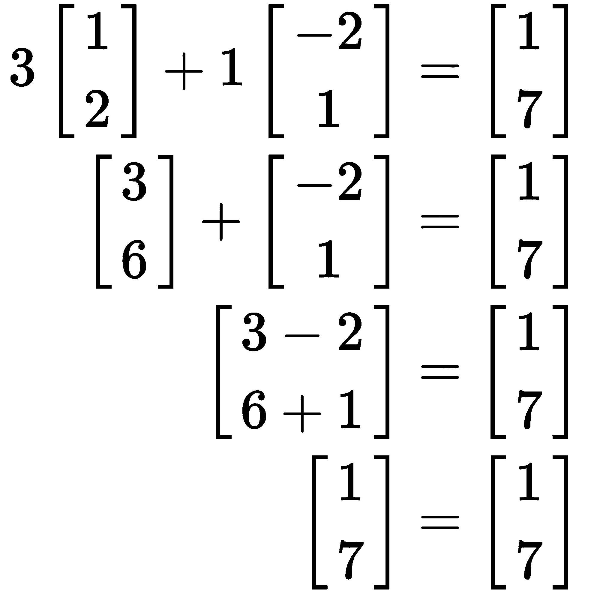
正如我们所看到的，左手边等于右手边，所以它实际上是一个解！不过，我个人更喜欢把这个写成系数矩阵，像这样:
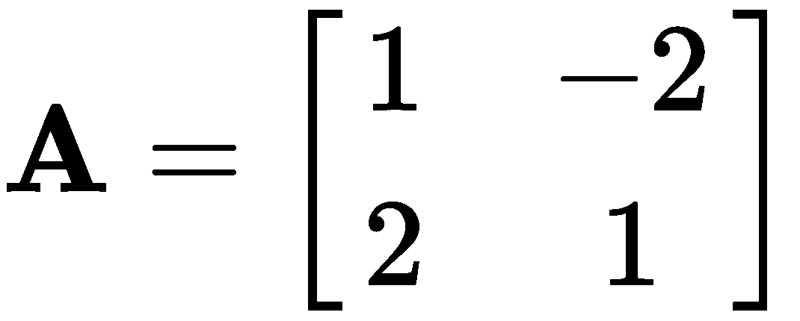
使用系数矩阵，我们可以将方程组表示为形式为 的矩阵问题，其中列向量 v 是变量向量。我们这样写，如下所示:
的矩阵问题，其中列向量 v 是变量向量。我们这样写，如下所示:
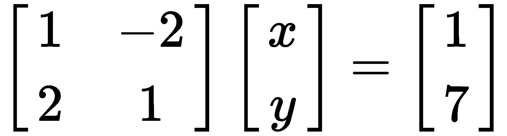。
接下来，我们将以这种形式表达我们所有的问题。
为了更好地理解，我们将分解矩阵 A 和向量 v 的乘法。最简单的是把它想成向量的线性组合。让我们来看看下面的例子，一个3x3的矩阵和一个3x1的向量:
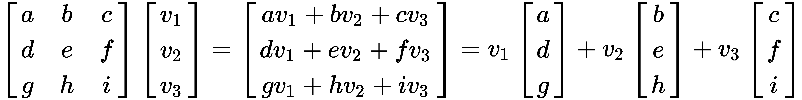
重要的是要注意，只有当矩阵中的列数等于向量中的行数(元素)时，矩阵和向量乘法才是可能的。
例如，让我们看看下面的矩阵:
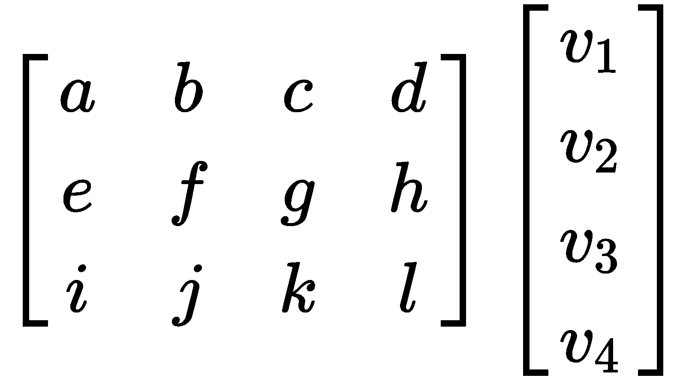
这可以相乘，因为矩阵中的列数等于向量中的行数，但是下面的矩阵不能相乘，因为列数和行数不相等:
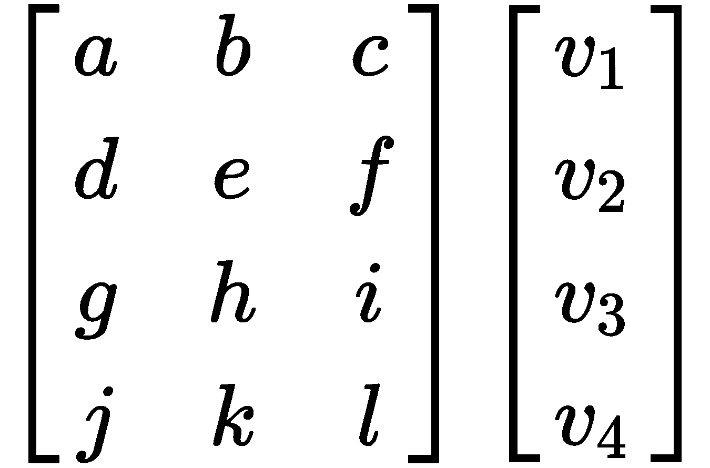
让我们将向量上的一些操作形象化，以直观地了解它们是如何工作的。看看下面的截图:
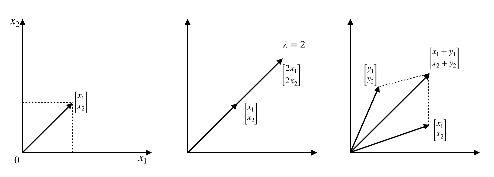
我们处理的前面的向量都在 (二维空间)中，这些向量的所有结果组合也将在
(二维空间)中，这些向量的所有结果组合也将在 中。这同样适用于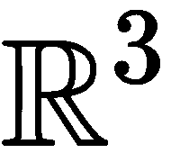、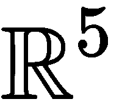和
中。这同样适用于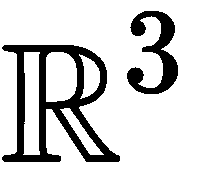、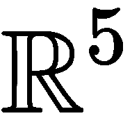和 中的矢量。
中的矢量。
还有一种非常重要的向量运算叫做点积，是乘法的一种。我们取 、 v 和 w 中的两个任意向量，求其点积，像这样:
、 v 和 w 中的两个任意向量，求其点积，像这样:
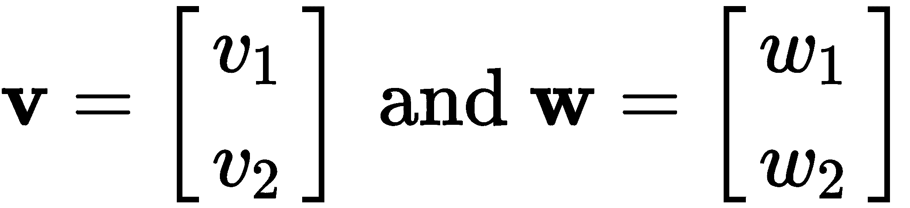
以下是产品:
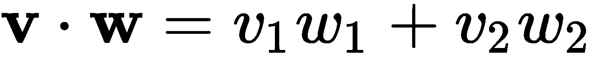。
让我们继续，使用我们之前处理的相同向量，如下所示:
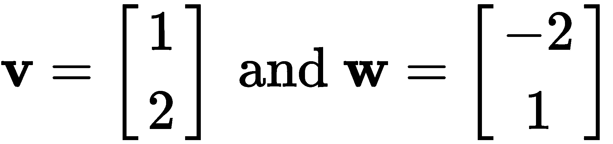
通过取它们的点积，我们得到零，这告诉我们这两个向量是垂直的(它们之间有90°角)，如下所示:
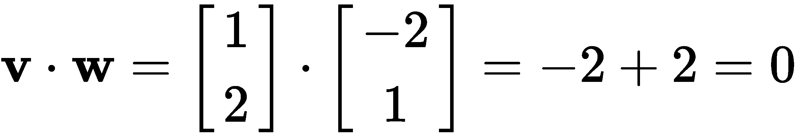
垂直向量最常见的例子是代表 x 轴、 y 轴等的向量。在 中，我们把 x 轴矢量写成 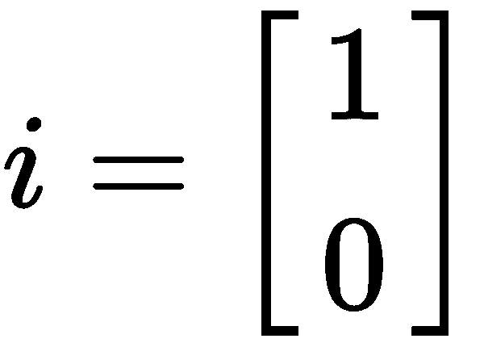 ，把 y 轴矢量写成 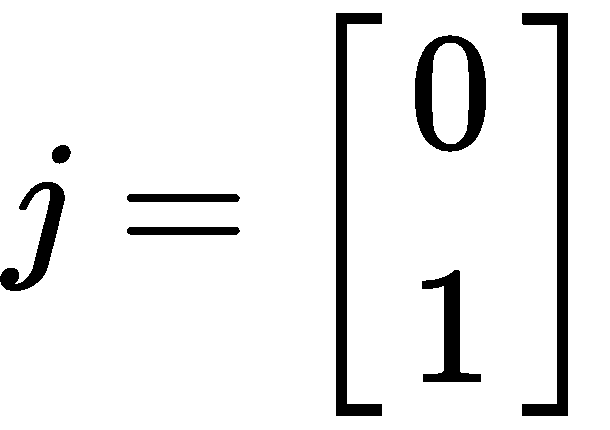 。如果我们取点积Ij，我们发现它等于零，因此它们是垂直的。
中，我们把 x 轴矢量写成 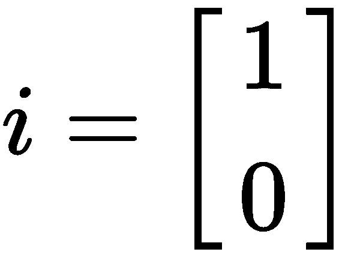 ，把 y 轴矢量写成 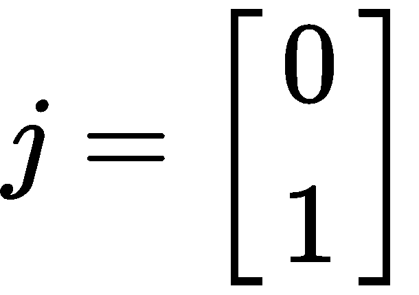 。如果我们取点积Ij，我们发现它等于零，因此它们是垂直的。
通过将 i 和 j 组合成一个2x2矩阵，我们得到如下的单位矩阵，这是一个非常重要的矩阵:
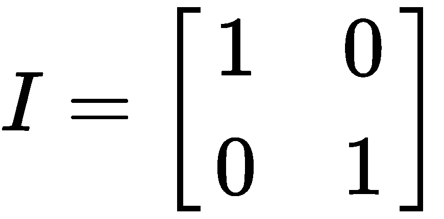
以下是我们在求解类型的线性方程时会遇到的一些情况:
让我们考虑矩阵 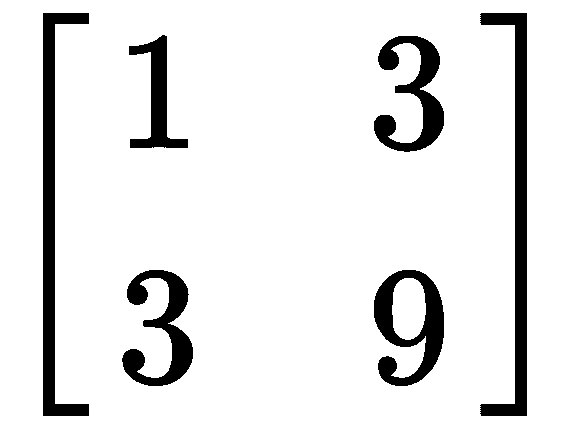 和方程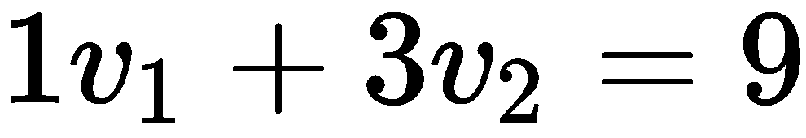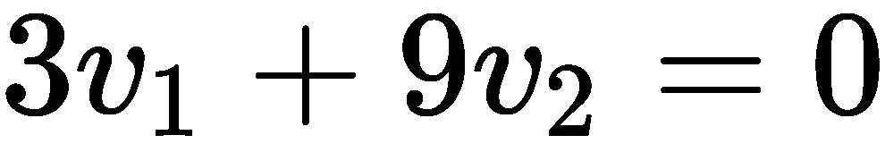。如果我们做代数，把第一个方程乘以3，就得到 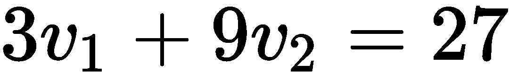 。但是第二个方程等于零，这意味着这两个方程不相交，因此无解。当一列依赖于另一列(即，是另一列的倍数)时，  和 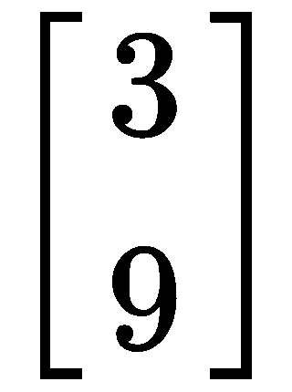 的所有组合都位于同一方向。然而，由于 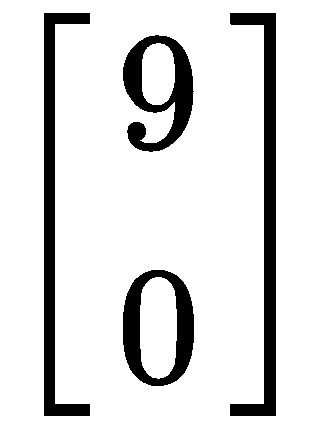 不是上述两个列向量的组合，并且不在同一直线上，所以它不能是方程的解。
和 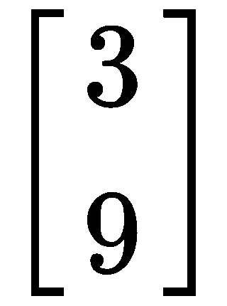 的所有组合都位于同一方向。然而，由于 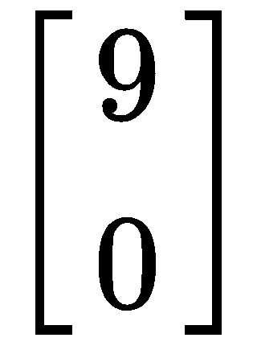 不是上述两个列向量的组合，并且不在同一直线上，所以它不能是方程的解。
- 让我们采取和以前一样的矩阵，但这一次，
 。因为 b 在直线上，并且是相关向量的组合，所以有无限多个解。我们说 b 在a的列空间中。虽然只有一个产生 b 的 v 的特定组合，但是有无限个产生零向量的列向量组合( 0 )。例如，对于任何值， a ，我们得到如下:
。因为 b 在直线上，并且是相关向量的组合，所以有无限多个解。我们说 b 在a的列空间中。虽然只有一个产生 b 的 v 的特定组合，但是有无限个产生零向量的列向量组合( 0 )。例如，对于任何值， a ，我们得到如下:
- 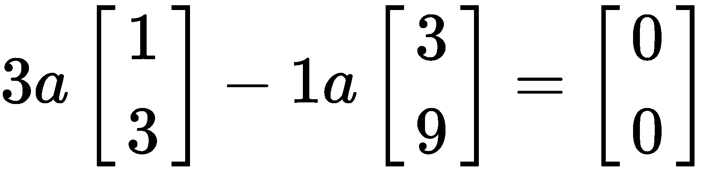
这就引出了另一个非常重要的概念，即完整解决方案。完整的解决方案是产生 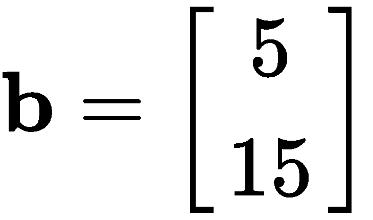 的所有可能方式。我们把这个写成 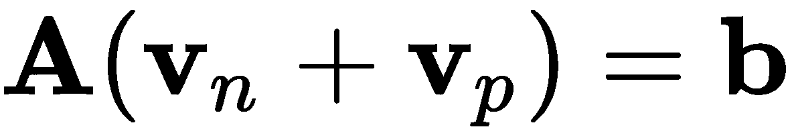 ，这里的 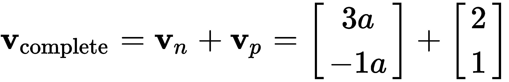 。
求解n维线性方程
早先，我们的方程在二维空间( xy 平面)中产生曲线。现在，我们将要处理的方程将产生三维空间中的平面(XYZ-平面)。
让我们取一个任意的3×3矩阵，如下所示:
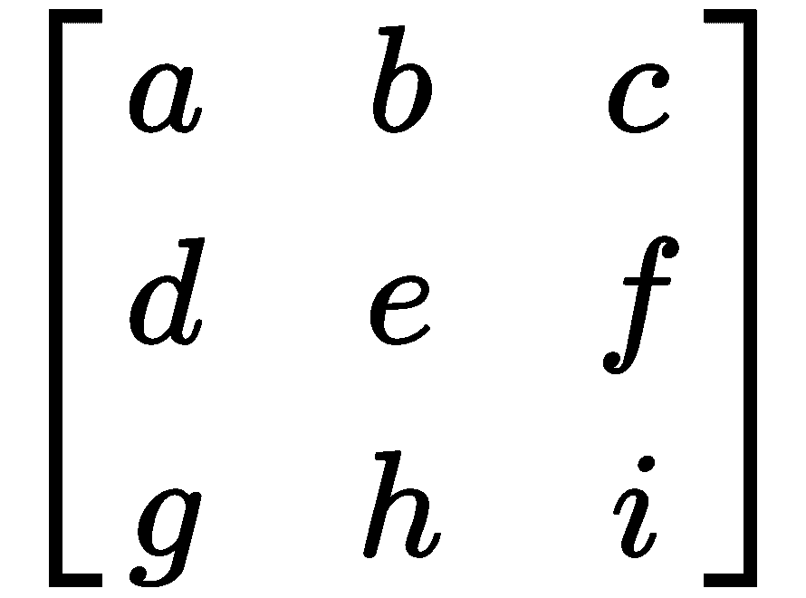
我们从前面处理二维线性方程中知道，我们的解 b 和前面一样，是三个列向量的线性组合，因此 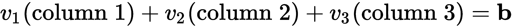 。
方程式 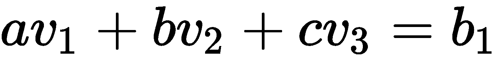 (方程式1)产生一个平面，同样的还有 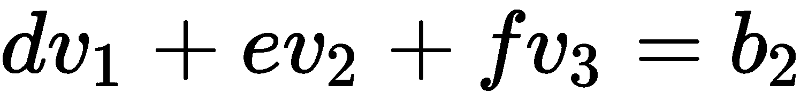 (方程式2)，以及  (方程式3)。
(方程式3)。
当两个平面相交时，它们相交于一条直线；然而，当三个平面相交时，它们相交于一点。那个点就是矢量 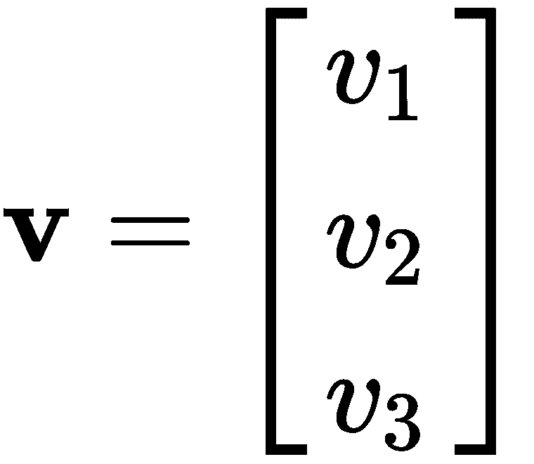 ，这就是我们问题的解决方法。
但是，如果三个平面不相交于一点，则线性方程无解。解线性方程的相同概念可以扩展到更多的维度。
假设现在我们有一个包含15个线性方程和15个未知变量的系统。我们可以使用前面的方法，根据它，我们需要找到满足所有15个方程的点——也就是它们相交的地方(如果存在的话)。
它看起来会像这样:
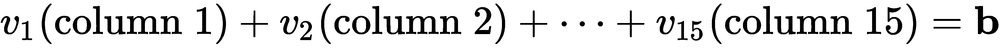
如你所知，我们需要处理很多方程，维数越大，就越难解决。
用消元法解线性方程
让我们来看看两个带有两个变量的方程，如下所示:

消除之后，这变成如下:
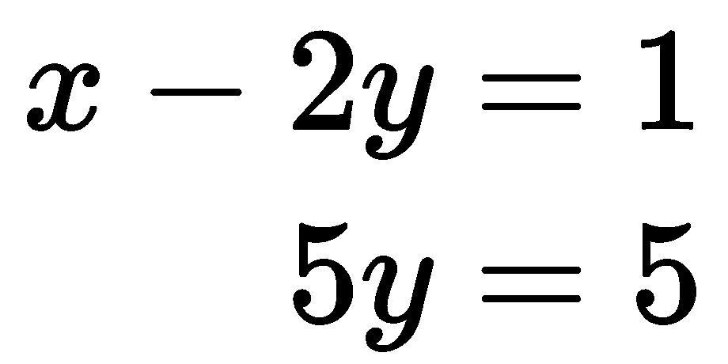
正如我们所见，变量 x 不再出现在第二个方程中。我们可以将 y 值插回到第一个等式中，并求解 x 。这样做，我们发现 x = 3 和 y = 1 。
我们把这个叫做三角因式分解。有两种类型——下三角形和上三角形。我们用一个叫做回代的过程从上到下解决上三角系统，这个过程适用于任何规模的系统。
虽然这是一种有效的方法，但它不是万无一失的。我们可能会遇到这样的情况，方程比变量多，或者变量比方程多，这是无法解决的。或者，我们可以有一个场景，比如 0x = 7 ，我们知道，被零除是不可能的。
让我们用三个变量求解三个方程，如下所示:
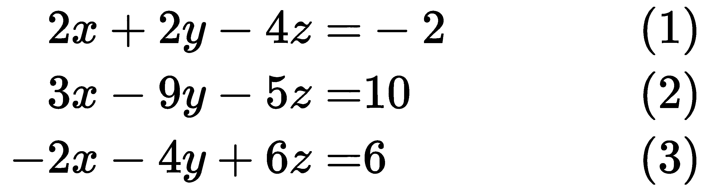
我们将使用上三角分解并消除变量，从 y 开始，然后是 z 。让我们首先将它放入矩阵形式，如下所示:
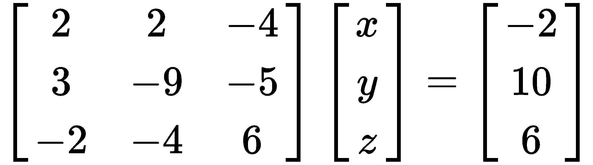
出于我们的目的，为了使事情更简单，我们将去掉列向量 v ，得到以下结果:
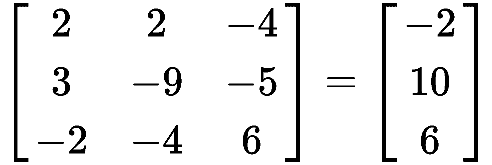
然后，交换第2行和第3行，就像这样:
然后，将第2行和第1行相加，以消除第2行中的第一个值，如下所示:
接下来，将第1行乘以3/2，然后从第3行减去它，就像这样:
最后，将第2行乘以6，然后从第3行减去它，就像这样:
你可以注意到，矩阵中的值现在形成了一个向上的三角形，这就是为什么我们称它为上三角形。将数值向后(自下而上)代入上一个方程，即可求解，发现。
综上所述，变成了，如下图所示:
为了检查我们找到的解是否正确，我们使用我们找到的 x 、 y、和 z 的值来求解，如下所示:
Note: The values across the diagonal in the triangular factorized matrix are called pivots, and when factorized, the values below the diagonal are all zeros.
这就变成了下面的等式:
正如我们所见，左手边和右手边相等。
经过上三角分解后，任意4x4矩阵将如下所示:
我们可以更进一步，分解上三角矩阵，直到我们最终得到一个只包含沿对角线的枢轴值，而其他地方都为零的矩阵。这个结果矩阵 P 本质上完全解决了我们的问题，而不需要我们求助于向前或向后替换，它看起来像这样:
但是正如你所知，让我们从 A 到 P 有很多步骤。
还有一种非常重要的因式分解方法叫做上下 ( LU)分解。其工作方式是我们将 A 因式分解成一个上三角矩阵 U ，并将高斯消去的步骤记录在一个下三角矩阵 L 中，这样  。
。
让我们重温一下我们之前上三角分解过的矩阵，并将其转化为LU分解形式，如下所示:
如果我们将右边的两个矩阵相乘，我们将得到原始矩阵 A 。但是我们是怎么到这里的呢？让我们按照如下步骤进行操作:
我们从开始，因此以下内容适用:
我们在 l 2，1T28】处的单位矩阵上加-1来表示操作(第2行)-(-1)(第1行)，所以它变成如下:
然后我们将 加到矩阵中的 l 3，1 处来表示 的运算，所以变成如下:

然后我们在矩阵的 l 3，2T44】处加6来表示操作(第3行)-6(第2行)，所以它变成如下:

这就是我们之前看到的LU分解矩阵。
你现在可能想知道这和求解 有什么关系，这是非常正确的。消除过程往往工作得很好，但我们还必须额外应用我们在 A 到 b 上所做的所有操作，这涉及到额外的步骤。但是，LU因式分解只适用于 A 。
有什么关系，这是非常正确的。消除过程往往工作得很好，但我们还必须额外应用我们在 A 到 b 上所做的所有操作，这涉及到额外的步骤。但是，LU因式分解只适用于 A 。
现在让我们看看如何用这种方法来解线性方程组。
为简单起见，我们去掉变量vector，将 A 和 b 写成如下:
但即使这样，在我们进行的过程中，编写起来也会很麻烦，因此为了进一步简化，我们将改为按以下方式编写:
然后，我们将两边乘以，得到以下结果:
这告诉我们，而我们从前面的等式中已经知道  (所以 )。通过回代，我们可以找到向量 v 。
(所以 )。通过回代，我们可以找到向量 v 。
在前面的例子中，您可能已经注意到一些我还没有介绍的新符号，但是不用担心，我们将在下一节中观察所有必要的符号和操作。
矩阵运算
值得注意的是，我们只能添加具有相同维数的矩阵，而且，正如您可能已经注意到的，我们是按元素添加矩阵的。
乘法矩阵
有四个简单的规则可以帮助我们计算矩阵乘法，如下所示:
首先，当矩阵 A 的列数等于矩阵 B 的行数时，我们只能将两个矩阵相乘。
- 其次，矩阵的第一行A 乘以矩阵 B 的第一列，得到矩阵 AB 中的第一个元素，以此类推。
- 第三，乘法时，顺序很重要——具体来说，AB≦BA。
- 最后，行 i 列 j 的元素是矩阵 A 的第 i 行和矩阵 B 的第 j 第列的乘积。
- 让我们用一个任意的4x5矩阵乘以一个任意的5x6矩阵，如下所示:
这会产生一个4x6矩阵，如下所示:
由此，我们可以推断，一般来说，以下情况适用:
让我们把下面两个矩阵相乘，就像这样:
 和
和
这将为我们提供以下矩阵:
。
单位矩阵在矩阵乘法中有两个独特的性质。与任意矩阵相乘时，返回原矩阵不变，相乘顺序无关紧要—所以， AI = IA = A 。
Note: In this example, the matrix B is the identity matrix, usually written as I.
例如，让我们使用前面的同一个矩阵 A ，并乘以另一个矩阵 B ，如下所示:
另一个很特殊的矩阵是逆矩阵，写为 A -1 。而当我们把 A 乘以 A -1 时，就得到 I ，这个单位矩阵。
如前所述，我们相乘的顺序很重要。我们必须保持矩阵有序，但我们确实有一些灵活性。正如我们在下面的等式中看到的，括号可以移动:
这是矩阵运算的第一定律，被称为结合律。
以下是三条不可违背的重要定律:
交换性 :
- 分配性 : 或
- 关联性 :
- 作为 AB ≠ BA 的证明，我们来看看下面的例子:
这最终表明这两个结果是不一样的。
我们知道我们可以将数字提升到幂，但是我们也可以将矩阵提升到幂。
如果我们将矩阵 A 提升到幂 p ，我们得到如下结果:
(矩阵乘以自身 p 倍)
矩阵还有两个额外的幂律——和 。
逆矩阵
同样，在寻找矩阵的逆时，我们必须遵循一些规则，如下所示:
只有通过上或下三角因式分解的过程，我们获得对角线上的所有主元值，逆矩阵才存在。
- 如果矩阵是可逆的，那么它只有一个唯一的逆矩阵——即如果 AB = I 和 AC = I ，那么 B = C 。
- 如果 A 是可逆的，那么为了求解 Av = b 我们将两边都乘以 A -1 得到AA-1v=A-1b，最后得到我们=
- 如果 v 非零并且 b = 0，那么矩阵没有逆矩阵。
- 仅当 ad - bc ≠ 0时，2 x 2矩阵才是可逆的，以下情况适用:
而 ad - bc 称为 A 的行列式。 A -1 涉及用行列式除矩阵中的每个元素。
最后，如果矩阵沿对角线有任何零值，则它是不可逆的。
- 有时，我们可能不得不求两个矩阵乘积的逆矩阵，但这只有在两个矩阵都是可逆的情况下才有可能(遵循前面概述的规则)。
举个例子，我们取两个矩阵A和B，它们都是可逆的。然后，  以便于 。
以便于 。
矩阵转置
Note: Pay close attention to the order of the inverse—it too must follow the order. The left-hand side is the mirror image of the right-hand side.
然后，矩阵 B 如下所示:
。
本质上，我们可以认为这是将 A 的列写成转置矩阵 B 的行。
我们通常把 A 的转置写成 A T 。
对称矩阵是一种特殊的矩阵。它是一个 n×n 的矩阵，当它被转置时，和我们转置前完全一样。
以下是倒置和转置的特性:
If A is an invertible matrix, then so is AT, and so (A-1)T = (AT)-1 = A-T.
当我们进行三角因式分解时，我们希望我们的主值沿着矩阵的对角线，但这不会每次都发生——事实上，通常不会。因此，相反，我们所做的是交换行，这样我们就可以在我们想要的地方获得透视值。
但这不是他们唯一的用例。我们还可以使用它们来按标量值缩放单个行，或者向其他行添加行或从其他行中减去行。
让我们从一些更基本的置换矩阵开始，我们通过交换单位矩阵的行来获得它们。一般来说，我们有 n！可以由一个 n x n 单位矩阵形成的可能置换矩阵。在本例中，我们将使用一个3×3矩阵，因此有六个置换矩阵，如下所示:
该矩阵对其应用的矩阵不做任何改变。
- 这个矩阵交换它所应用的矩阵的第二行和第三行。
- 这个矩阵交换它所应用的矩阵的第一行和第二行。
- 此矩阵将第二行和第三行上移一行，并将第一行移动到它所应用的矩阵的第三行的位置。
- 此矩阵将第一行和第二行下移一行，并将第三行移动到它所应用的矩阵的第一行位置。
- 这个矩阵交换它所应用的矩阵的第一行和第三行。
- 值得注意的是，置换矩阵有一个特别有趣的性质，即如果我们有一个矩阵
 并且它是可逆的，那么存在一个置换矩阵，当应用于 A 时，它将给出 A 的LU因子。我们可以这样表达:
并且它是可逆的，那么存在一个置换矩阵，当应用于 A 时，它将给出 A 的LU因子。我们可以这样表达:
向量空间和子空间
考虑维度最简单的方法是计算列向量中元素的数量。假设我们有 ，那么。是一条直线， 是 xy 平面上所有可能的点，
是 xy 平面上所有可能的点， 是 xyz 平面上所有可能的点——也就是三维空间，以此类推。
是 xyz 平面上所有可能的点——也就是三维空间，以此类推。
以下是向量空间的一些规则:
在 V 中存在一个附加的相同元素，使得对于所有的。
- 对于所有的
 ，都存在一个加法逆，如 。
，都存在一个加法逆，如 。
- 对于所有的
 ，存在一个乘法恒等式，使得。
，存在一个乘法恒等式，使得。
- 向量是可换的，这样对于所有的
 。
。
- 向量是相联的，如 。
- 向量具有分布性，如 和 为所有
 和所有
和所有  。
。
- 一组向量如果 就说是线性无关的，这就暗示了 。
我们要知道的另一个重要概念叫做跨度。 的跨度是使用 n 个向量可以得到的所有线性组合的集合。因此， 如果向量线性无关且完全跨越V；那么，向量  就是 V 的基础。
就是 V 的基础。
所以 V 的维数就是我们拥有的基向量的个数，我们将其表示为 dimV 。
子空间
T47
- ，暗示 S 在加法下关闭
- 和使得 ，这暗示着 S 在标量乘法下是封闭的
- 如果 ，那么它们的和就是 ，其中结果也是 V 的一个子空间。
总和 的维度如下:
线性地图
，为所有
- ，为所有
 和
和
- 线性映射倾向于在加法和标量乘法下保持向量空间的性质。线性映射称为向量空间的同态；然而，如果同态是可逆的(其中逆是同态)，那么我们称映射为同构。
当 V 和 W 同构时，我们将此表示为 ，它们都具有相同的代数结构。
如果 V 和 W 是 中的向量空间，而 ，则称之为自然同构。我们这样写:
中的向量空间，而 ，则称之为自然同构。我们这样写:

这里，是 V 和 W 的基数。利用前面的等式，我们可以看到  ，这就告诉我们是一个同构。
，这就告诉我们是一个同构。
让我们像以前一样取相同的向量空间 V 和 W ，分别以 和 为基数。我们知道 是一个线性映射，有条目 A ij 的矩阵 T ，其中可以定义如下:
。
从我们的矩阵知识中应该知道，A的jthT44】列在 W 的基础上包含了TvjT48】。
于是，  产生了一个线性映射 ，我们把它写成
产生了一个线性映射 ，我们把它写成  。
。
图像和内核
内核(有时称为零空间)为0(零向量)，由线性映射产生，如下所示:
T的图像(有时称为范围)定义如下:
使得。
V 和 W 有时也被称为 T 的域和共域。
最好把内核看成是把向量 映射到 的线性映射。然而，图像是所有可能的线性组合的集合，这些组合可以映射到向量集合 。
秩-零性定理(有时称为线性映射的基本定理)指出，给定两个向量空间 V 和 W 以及一个线性映射  ，以下将保持为真:
，以下将保持为真:
。
度量空间和赋范空间
到目前为止，我们一直在处理向量，但我们还不知道的是如何计算一个向量的长度或两个或多个向量之间的距离，以及两个向量之间的角度，从而得到正交性(垂直度)的概念。这就是欧几里得空间派上用场的地方。事实上，它们是几何的基本空间。这在目前看起来可能相当琐碎，但是随着我们在本书中的深入，它们的重要性将变得更加明显。
集合 S 上的度量被定义为函数并满足以下标准:
In Euclidean space, we tend to refer to vectors as points.
，当 然后
这很好，但是我们如何计算距离呢？
假设我们有两点，  和；然后，它们之间的距离可以计算如下:
和；然后，它们之间的距离可以计算如下:
并且我们可以扩展这个来找到 中的点的距离，如下所示:
中的点的距离，如下所示:
度量有助于距离的概念，而范数定义了欧几里得空间中长度的概念。
向量空间上的范数是函数 ，并且满足以下条件:
，而当接着
-
- (又称三角形不等式)
- 对于所有的
 和
和  。
。
重要的是要注意，向量空间上的任何范数都在所述向量空间上创建距离度量，如下所示:
这满足了度量的规则，告诉我们赋范空间也是度量空间。
一般来说，出于我们的目的，我们将只关注关于 的四个规范，如下所示:
的四个规范，如下所示:
-
-
- (这只适用于 )
- 如果你仔细观察这四个规范，你会发现1-和2-规范是p-规范的版本。然而，-范数是p-范数的极限，因为p趋于无穷大。
使用这些定义，如果满足以下条件，我们可以定义两个矢量正交:
内积空间

- 和
- T38
- 对于所有的 和
 。
。
重要的是要注意，向量空间上的任何内积都在所述向量空间上产生范数，我们看到如下:
从这些规则和定义中我们可以注意到，所有的内积空间也是赋范空间，因此也是度量空间。
另一个很重要的概念是正交性，简单来说就是两个向量从欧几里得空间看是互相垂直的(也就是互相成直角)。
如果两个向量的内积为零，则这两个向量是正交的——即 。作为垂直度的简写，我们写 。
此外，如果两个正交向量是单位长度的，即 ，那么它们被称为正交。
一般来说， 中的内积如下:
中的内积如下:
矩阵分解
在符号上，行列式通常写成  或 。
或 。
Note: The determinant only exists when we have square matrices.
让我们取一个任意的 n × n 矩阵A，如下:
我们也将取它的行列式，如下:
行列式将矩阵简化为实数(或者，换句话说，将 A 映射到实数)。
我们首先检查一个方阵是否可逆。让我们取一个2x2的矩阵，根据前面的定义，我们知道这个矩阵应用于它的逆矩阵会产生单位矩阵。这与我们将 a 乘以 (仅当  时为真)的工作方式没有什么不同，除了矩阵。因此，AA-1=I。
时为真)的工作方式没有什么不同，除了矩阵。因此，AA-1=I。
让我们继续寻找矩阵的逆矩阵，如下所示:
只有当 时，a才是可逆的，这个结果值就是我们所说的决定子。
现在我们知道了如何在2x2的情况下找到行列式，让我们继续到一个3x3的矩阵，并找到它的行列式。看起来是这样的:
这会产生以下结果:
我知道这可能看起来更吓人，但它真的不是。花点时间仔细看看我们做了什么，以及这对一个更大的 n × n 矩阵是如何工作的。
如果我们有一个 n × n 矩阵，并且它可以三角分解(上或下)，那么它的行列式将是所有主元值的乘积。为了简单起见，我们将用 T 来表示所有可三角分解的矩阵。因此，行列式可以写成这样:
看前面的3×3矩阵例子，我相信你已经明白计算矩阵的行列式是一个相当漫长的过程。幸运的是，有一种方法可以简化计算，这就是拉普拉斯展开式的用处。
当我们想求一个n×n矩阵的行列式时，拉普拉斯展开式会求出(n×1)×(n×1)矩阵的行列式，如此反复，直到得到2×2矩阵。一般来说，我们可以用2×2矩阵来计算n×n矩阵的行列式。
我们再来取一个 n 维的方阵，其中 。我们再把所有的 展开，如下:
。我们再把所有的 展开，如下:
沿行 i 展开:
沿着行 j 展开:
而 是的一个子矩阵，是我们去掉行 i 和列 j 后得到的。
例如，我们有一个3×3矩阵，如下所示:
我们想用第一行的拉普拉斯展开式来求出它的行列式。这将导致以下结果:

我们现在可以使用2×2情况下的上述等式，计算 A 的行列式，如下所示:
 。
。
以下是行列式的一些非常重要的性质，了解这些性质很重要:
- T31
- T34
- T38】
-

- 行列式还有一个额外的性质，那就是我们可以用它来求
 中一个顶点由矩阵中的列向量构成的物体的体积。
中一个顶点由矩阵中的列向量构成的物体的体积。
举个例子，我们以 中的平行四边形为例，向量为。通过取2×2矩阵的行列式，我们找到形状的面积(我们只能找到
中的平行四边形为例，向量为。通过取2×2矩阵的行列式，我们找到形状的面积(我们只能找到 或更高的物体的体积)，如下所示:
或更高的物体的体积)，如下所示:
作为练习，欢迎您亲自尝试任何3×3矩阵。
特征值和特征向量

让我们再次考虑一个矩阵 A ，它有一个特征向量 x 和一个相应的特征值λ。然后，将应用以下规则:
Note: The zero vector (0) cannot be an eigenvector of A, since A0 = 0 = λ0 for all λ.
如果我们有一个矩阵 A 并且它已经从当前位置移动到了 ，那么它就有了特征向量 x 和对应的特征值 ，对于所有的 ，这样就有了 。
- 如果矩阵 A 可逆，那么 x 也是矩阵 的逆的一个特征向量，对应的特征值 。
- 为任意 为任意。
- 从本章前面我们知道，每当我们把一个矩阵和一个向量相乘时，向量的方向就会改变，但特征向量不是这样。它们与 A 同向，因此 x 保持不变。特征值是一个标量值，它告诉我们特征向量是否被缩放，如果是，缩放了多少，以及向量的方向是否改变了。
行列式的另一个非常有趣的性质是，它等价于矩阵特征值的乘积，它的写法如下:
但这不是行列式与特征值的唯一关系。我们可以把改写成 的形式。因为它等于零，这意味着它是一个不可逆矩阵，因此它的行列式也必须等于零。利用这一点，我们可以用行列式来求特征值。让我们看看怎么做。
假设我们有 。那么，它的行列式如下所示:
我们可以把它改写成下面的二次方程:
我们知道，二次方程会给我们两个特征值  。所以，我们把我们的值代入二次公式，得到我们的根。
。所以，我们把我们的值代入二次公式，得到我们的根。
另一个有趣的特性是，当我们有三角矩阵时，比如我们在本章前面找到的那些，它们的特征值就是枢轴值。所以，如果我们想找到一个三角矩阵的行列式，那么我们要做的就是找到对角线上所有元素的乘积。
找到；查出
以下是跟踪的四个重要属性:
T2】
-
-
-
- 轨迹的一个非常有趣的性质是，它等于其特征值之和，因此适用以下公式:
正交矩阵
但是为了得到一个理解，我们先从两个列向量 说起。如果它们是正交的，则以下成立:
 。
。
正交矩阵是一种特殊的矩阵，其中的列是成对正交的。这意味着我们有一个具有以下属性的矩阵 :
那么，我们可以推导出 (即 Q 的转置也是 Q 的逆)。
与其他类型的矩阵一样，正交矩阵也有一些特殊的性质。
首先，它们保存内部产品，因此适用以下内容:
。
这使我们想到第二个性质，它表明正交矩阵的2-范数是保持的，我们看到如下:
当乘以正交矩阵时，您可以将其视为保持长度的变换，但向量可能会围绕原点旋转一定角度。
最著名的正交矩阵也是正交的，它是一个特殊的矩阵，我们已经讨论过几次了。它就是单位矩阵 I ，由于它表示的是轴方向的长度单位，所以我们一般称它为标准基。
对角化和对称矩阵
我们从中得知，在处理矩阵时，这就变成了 ，其中 和每个 x i 都有唯一的λ i 。因此， 。
，其中 和每个 x i 都有唯一的λ i 。因此， 。
让我们继续讨论对称矩阵。这些是特殊的矩阵，当转置时，它们与原始矩阵相同，这意味着  和所有的 、 。这可能看起来相当琐碎，但它的含义相当强烈。
和所有的 、 。这可能看起来相当琐碎，但它的含义相当强烈。
谱定理指出，如果矩阵 是对称矩阵，那么
是对称矩阵，那么 存在一个标准正交基，它包含a的特征向量。
存在一个标准正交基，它包含a的特征向量。
这个定理对我们很重要，因为它允许我们分解对称矩阵。我们称之为光谱分解(有时也称为特征分解)。
假设我们有一个正交矩阵 Q ，特征向量 和 的正交基是具有相应特征值的矩阵。
从前面我们知道， 为全；因此，我们有以下内容:
通过将两边乘以QTT10】，我们得到以下结果:
Note: Λ comes after Q because it is a diagonal matrix, and the s need to multiply the individual columns of Q.
奇异值分解
出于我们的目的，让我们假设 、 、 和 ，并且 U、V 是正交矩阵，而∑是包含沿着对角线的 A 的奇异值(由σ i 表示)的矩阵。
前面等式中的 ∑ 是这样的:
我们也可以这样写SVD:
这里，UIT42，VIT46】是 U，V 的列向量。
乔莱斯基分解
乔莱斯基分解类似平方根，只对对称正定矩阵有效。
这通过将 A 分解成LLTT54】的形式来实现。这里， L 和之前一样，是下三角矩阵。
一定要培养一些直觉。看起来是这样的:
然而，在这里， L 被称为一个乔列斯基因子。
让我们来看看 的案例。
从前面的矩阵我们知道 ；因此，我们有以下内容:
；因此，我们有以下内容:
让我们把右边的上下三角矩阵相乘，如下:
完整地写出 A ，并将其等同于我们之前的矩阵，得到如下结果:

然后，我们可以逐元素地比较 A 和 LL T 的相应条目，并对 、进行代数求解，如下所示:
我们可以对任意对称正定矩阵重复这个过程，计算给定 a i，jT28】的 l i，jT24】值。
摘要
在下一章中，我们将学习微积分，并将它与本章前面所学的概念相结合来理解向量微积分。
In the next chapter, we will be learning about calculus and will combine it with the concepts learned earlier on in this chapter to understand vector calculus.
 的线性方程组，其中我们将一个矩阵乘以一个列向量，让我们继续处理我们可以对一个或多个矩阵进行的操作类型。
的线性方程组，其中我们将一个矩阵乘以一个列向量，让我们继续处理我们可以对一个或多个矩阵进行的操作类型。 矩阵一个。如果矩阵的转置是 B ，那么 B 的维数是，这样: 。这里是矩阵一:
矩阵一个。如果矩阵的转置是 B ，那么 B 的维数是，这样: 。这里是矩阵一: 个特征向量。我们将这些向量放入一个可逆的矩阵 X 中，并将两个矩阵相乘。这为我们提供了以下信息:
个特征向量。我们将这些向量放入一个可逆的矩阵 X 中，并将两个矩阵相乘。这为我们提供了以下信息: